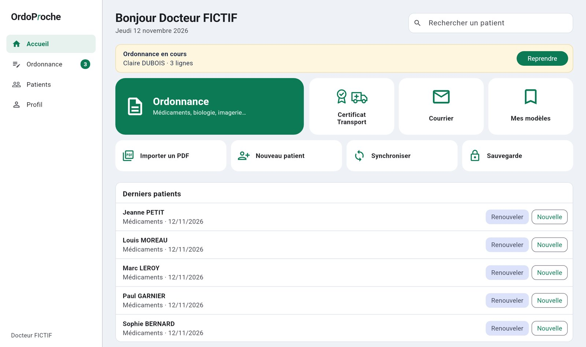
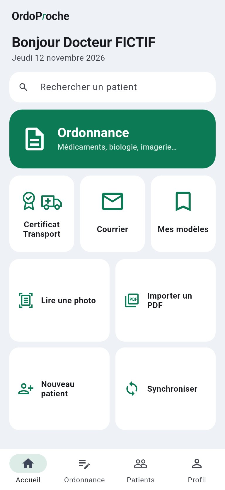

Application d'ordonnances pour médecins
Vos ordonnances rédigées et signées en quelques instants. Tout reste sur votre appareil : l'application fonctionne sans connexion.
Télécharger pour Android Télécharger pour WindowsFichier de 145 Mo.Fichier de 25 Mo. Version 2026.11.23 du 23 novembre 2026. Gratuit.


Installation
Une fois le téléchargement terminé.
Si le téléphone bloque, touchez Paramètres puis activez l'autorisation.
Si un avertissement s'affiche, touchez Plus de détails puis Installer quand même.
À la première ouverture d'OrdoProche.
Ces avertissements sont normaux : l'application n'est pas sur le Play Store.
Installation
Une fois le téléchargement terminé.
Cliquez sur Informations complémentaires puis sur Exécuter quand même.
À la première ouverture d'OrdoProche.
Cet avertissement est normal : le logiciel n'est pas signé par un éditeur commercial.
Code d'activation
Chaque code est délivré à un seul médecin, après vérification au cas par cas.
Écrivez par messagerie sécurisée MSSanté à
jean.houel@medecin.mssante.fr
Le même code sert sur téléphone et sur ordinateur, et reste valable après les mises à jour.